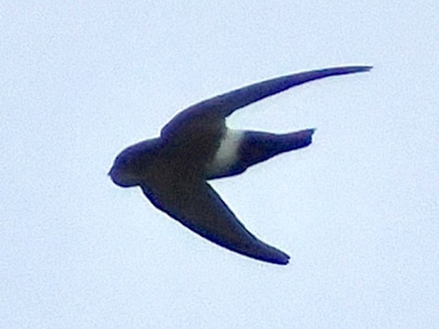

House Swift
Apus nipalensis
Order: Apodiformes
Family: Apodidae

A small, fast swift with a white rump and squarish tail. The family name of the swifts, Apodidae, means "without feet", to reference their small weak feet.
Similar species
Pacific Swift- Larger size
- Forked tail (vs square tail)